Hand assets for إشارتي
1 · Fluent Emoji 3D (MIT) — 6 skin tones
Shown: default + 6 tones for the first gestures.
 waving_hand
waving_hand
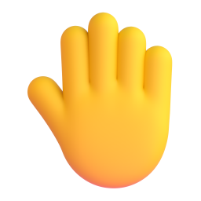
raised_back_of_hand
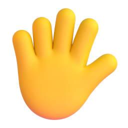
hand_fingers_splayed
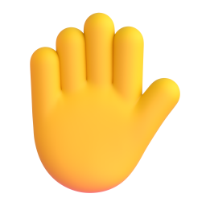
raised_hand
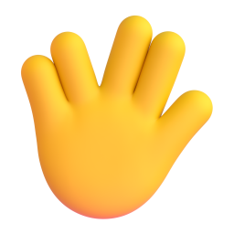
vulcan_salute
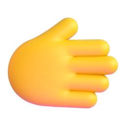
rightwards_hand
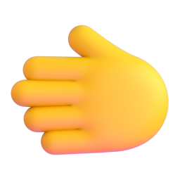
leftwards_hand
palm_down_hand
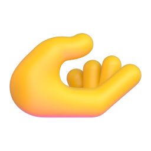
palm_up_hand
ok_hand
pinched_fingers
 pinching_hand
victory_hand
crossed_fingers
index_thumb_crossed
love_you_gesture
sign_of_the_horns
call_me_hand
point_left
point_right
point_up_backhand
point_down
index_pointing_up
point_at_viewer
pinching_hand
victory_hand
crossed_fingers
index_thumb_crossed
love_you_gesture
sign_of_the_horns
call_me_hand
point_left
point_right
point_up_backhand
point_down
index_pointing_up
point_at_viewer
 thumbs_up
thumbs_down
raised_fist
oncoming_fist
left_facing_fist
right_facing_fist
clapping_hands
raising_hands
heart_hands
open_hands
thumbs_up
thumbs_down
raised_fist
oncoming_fist
left_facing_fist
right_facing_fist
clapping_hands
raising_hands
heart_hands
open_hands
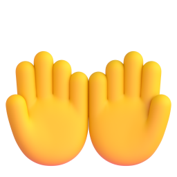
palms_up_together
handshake
folded_hands
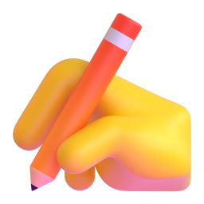
writing_hand

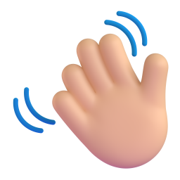
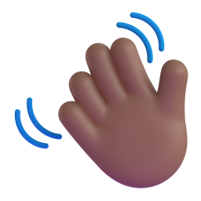
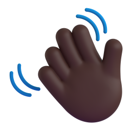
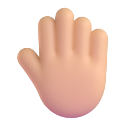
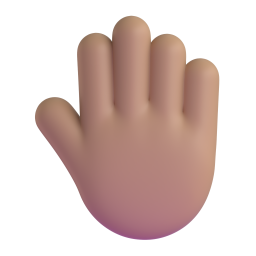
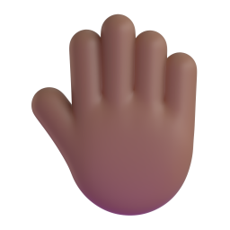
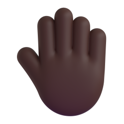
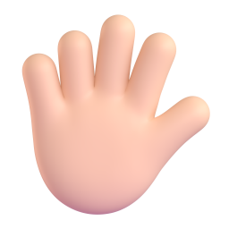
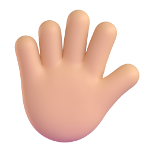
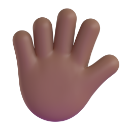
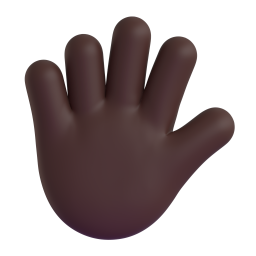
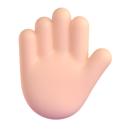
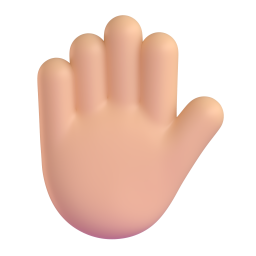
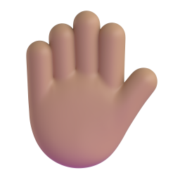
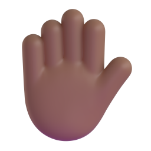
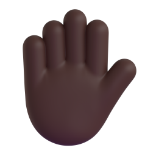
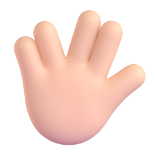
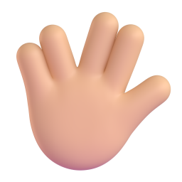
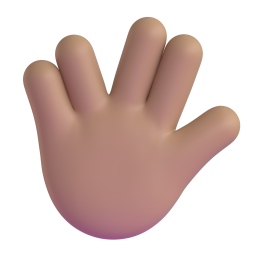
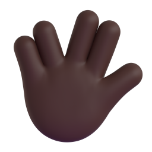
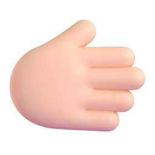
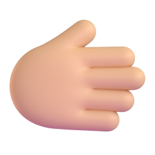
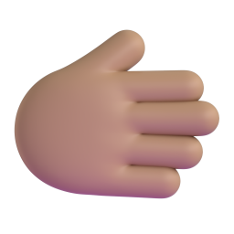
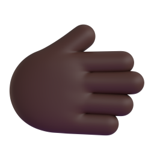
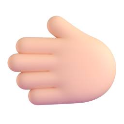
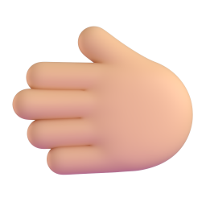
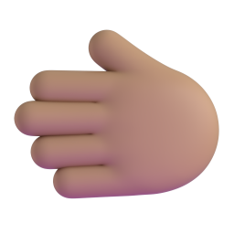
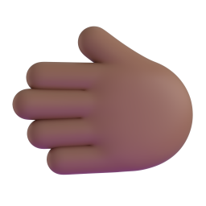
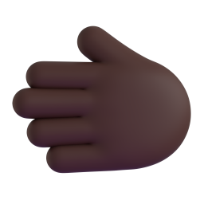
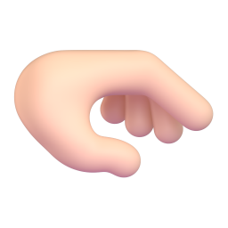
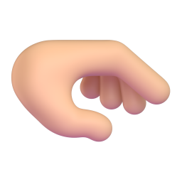
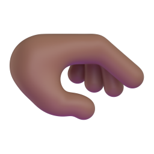
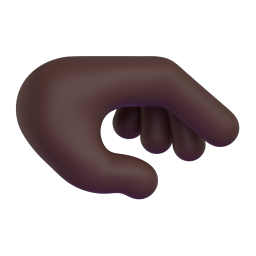
1b · Fluent Emoji flat SVG (MIT)
waving_hand
raised_back_of_hand
hand_fingers_splayed
raised_hand
vulcan_salute
rightwards_hand
leftwards_hand
palm_down_hand
palm_up_hand
ok_hand
pinched_fingers
pinching_hand
victory_hand
crossed_fingers
index_thumb_crossed
love_you_gesture
sign_of_the_horns
call_me_hand
point_left
point_right
point_up_backhand
point_down
index_pointing_up
point_at_viewer
thumbs_up
thumbs_down
raised_fist
oncoming_fist
left_facing_fist
right_facing_fist
clapping_hands
raising_hands
heart_hands
open_hands
palms_up_together
 handshake
folded_hands
writing_hand
handshake
folded_hands
writing_hand
2 · Noto Animated Emoji (CC BY 4.0) — Lottie
waving_hand
raised_back_of_hand
hand_fingers_splayed
raised_hand
vulcan_salute
rightwards_hand
leftwards_hand
palm_down_hand
palm_up_hand
ok_hand
pinched_fingers
pinching_hand
victory_hand
crossed_fingers
index_thumb_crossed
love_you_gesture
sign_of_the_horns
call_me_hand
point_left
point_right
point_up_backhand
point_down
index_pointing_up
point_at_viewer
thumbs_up
thumbs_down
raised_fist
oncoming_fist
left_facing_fist
right_facing_fist
clapping_hands
raising_hands
heart_hands
open_hands
palms_up_together
handshake
folded_hands
writing_hand
3 · SignWriting handshapes (MIT) — 254 ISWA 2010 handshapes
S10000
S10100
S10200
S10300
S10400
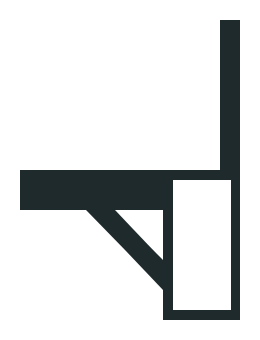
S10500
S10600
S10700
S10800
S10900
S10a00
S10b00
S10c00
S10d00
S10e00
S10f00
S11000
S11100
S11200
S11300
S11400
S11500
S11600
S11700
S11800
S11900
S11a00
S11b00
S11c00
S11d00
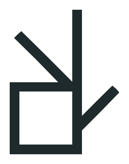
S11e00
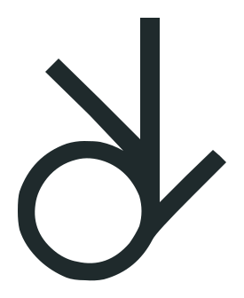
S11f00
S12000
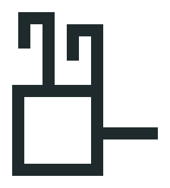
S12100
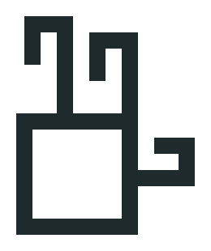
S12200
S12300
S12400
S12500
S12600
S12700
S12800
S12900
S12a00
S12b00
S12c00
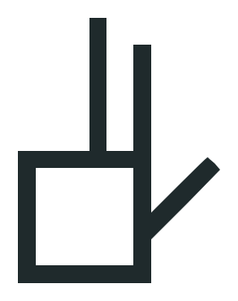
S12d00
S12e00
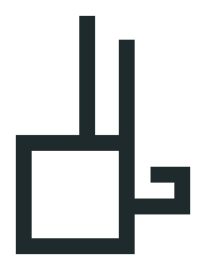
S12f00
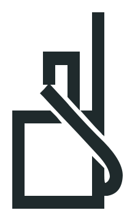
S13000
S13100
S13200
S13300
S13400
S13500
S13600
S13700
S13800
S13900
S13a00
S13b00
S13c00
S13d00
S13e00
S13f00
S14000
S14100
S14200
S14300
S14400
S14500
S14600
S14700
S14800
S14900
S14a00
S14b00
S14c00
S14e00
S15000
S15200
S15300
S15400
S15500
S15600
S15700
S15800
S15900
S15a00
S15b00
S15d00
S15f00
S16000
S16100
S16200
S16300
S16400
S16500
S16600
S16700
S16800
S16900
S16a00
S16b00
S16c00
S16d00
S16e00
S16f00
S17000
S17100
S17200
S17300
S17400
S17500
S17600
S17700
S17800
S17900
S17a00
S17b00
S17c00
S17d00
S17e00
S17f00
S18000
S18100
S18200
S18300
S18400
S18500
S18600
S18700
S18800
S18900
S18a00
S18b00
S18c00
S18d00
S18e00
S18f00
S19000
S19100
S19200
S19300
S19400
S19500
S19600
S19700
S19800
S19900
S19a00
S19b00
S19c00
S19d00
S19e00
S19f00
S1a000
S1a100
S1a200
S1a300
S1a400
S1a500
S1a600
S1a700
S1a800
S1a900
S1aa00
S1ab00
S1ac00
S1ad00
S1ae00
S1af00
S1b000
S1b100
S1b200
S1b300
S1b400
S1b500
S1b600
S1b700
S1b800
S1b900
S1ba00
S1bb00
S1bc00
S1bd00
S1be00
S1bf00
S1c000
S1c100
S1c200
S1c300
S1c400
S1c500
S1c600
S1c700
S1c800
S1c900
S1ca00
S1cb00
S1cc00
S1cd00
S1ce00
S1cf00
S1d000
S1d100
S1d200
S1d300
S1d400
S1d500
S1d600
S1d700
S1d800
S1d900
S1da00
S1db00
S1dc00
S1dd00
S1de00
S1df00
S1e000
S1e100
S1e200
S1e300
S1e400
S1e500
S1e600
S1e700
S1e800
S1e900
S1ea00
S1eb00
S1ec00
S1ed00
S1ee00
S1ef00
S1f000
S1f100
S1f200
S1f300
S1f400
S1f500
S1f700
S1f800
S1f900
S1fa00
S1fb00
S1fc00
S1fd00
S1fe00
S1ff00
S20000
S20100
S20200
S20300
4 · OpenMoji (CC BY-SA 4.0) — color + outline
waving_hand
raised_back_of_hand
hand_fingers_splayed
raised_hand
vulcan_salute
rightwards_hand
leftwards_hand
palm_down_hand
palm_up_hand
ok_hand
pinched_fingers
pinching_hand
victory_hand
crossed_fingers
index_thumb_crossed
love_you_gesture
sign_of_the_horns
call_me_hand
 point_left
point_right
point_up_backhand
point_down
index_pointing_up
point_left
point_right
point_up_backhand
point_down
index_pointing_up
 point_at_viewer
thumbs_up
thumbs_down
raised_fist
oncoming_fist
left_facing_fist
right_facing_fist
clapping_hands
raising_hands
heart_hands
open_hands
palms_up_together
handshake
folded_hands
writing_hand
point_at_viewer
thumbs_up
thumbs_down
raised_fist
oncoming_fist
left_facing_fist
right_facing_fist
clapping_hands
raising_hands
heart_hands
open_hands
palms_up_together
handshake
folded_hands
writing_hand
waving_hand
raised_back_of_hand
hand_fingers_splayed
raised_hand
vulcan_salute
rightwards_hand
leftwards_hand
palm_down_hand
palm_up_hand
ok_hand
pinched_fingers
pinching_hand
victory_hand
crossed_fingers
index_thumb_crossed
love_you_gesture
sign_of_the_horns
call_me_hand
point_left
point_right
point_up_backhand
point_down
index_pointing_up
point_at_viewer
thumbs_up
thumbs_down
raised_fist
oncoming_fist
left_facing_fist
right_facing_fist
clapping_hands
raising_hands
heart_hands
open_hands
palms_up_together
handshake
folded_hands
writing_hand
5 · MediaPipe hand models (Apache 2.0)
hand_landmarker.task (21 hand points) and gesture_recognizer.task — for the camera practice step.